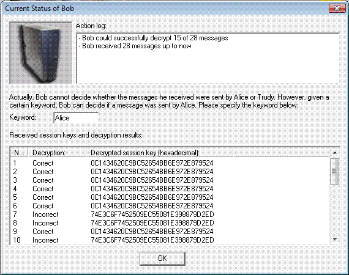

You can access this dialog window by clicking the symbol of Bob in the side-channel attack against the hybrid encryption protocol dialog.
This dialog offers detailed information about Bob.

Next to the portrait of Bob there is a window logging all important actions Bob executed during the side-channel attack.
Below you can define which keyword Bob uses to recognize if a message was indeed sent by Alice. Further information about this mechanism can be obtained here.
In the list box below you can find all encrypted session keys that Bob received during the side-channel attack and the respective decryption results.